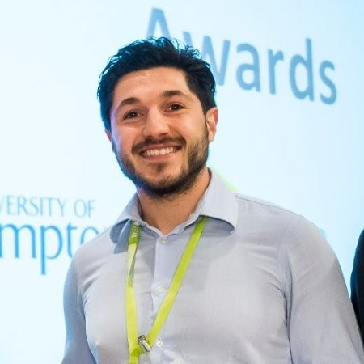

Data-Driven Rail: Securing the Future with Integration and Cybersecurity Dr John Easton Dr Joe Preece
Railways of Tomorrow: Navigating the Future Transport Ecosystem  Dr Marcelo Blumenfeld Dr Jenny Illingsworth